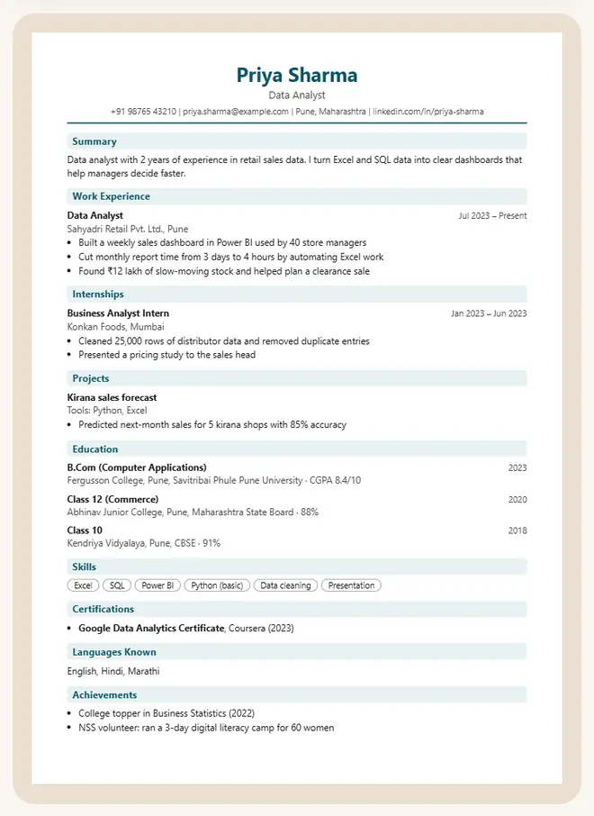

فریشر کے لیے ریزیومے فارمیٹ: ایک صفحے کا ریزیومے مفت بنائیں
کئی ریزیومے ویب سائٹیں پہلے سب کچھ بھروا لیتی ہیں اور پھر ڈاؤن لوڈ سے پہلے پیسے یا لاگ اِن مانگتی ہیں۔ یہاں آپ ایک صفحے کا صاف ستھرا ریزیومے بنا کر PDF مفت محفوظ کر سکتے ہیں، اور آپ کا فون نمبر اور پتہ آپ کے اپنے آلے پر ہی رہتے ہیں۔
مختصر جواب
ریزیومے اور CV بنائیں کھولیں، “خالی سے شروع کریں” دبائیں اور “فریشر” ٹیمپلیٹ چنیں (جاب پورٹل کے لیے “ATS کلاسک”)۔ اپنا نام اور رابطہ، 2 یا 3 سطروں کا خلاصہ، تعلیم، پروجیکٹ یا انٹرن شپ اور اسکل بھریں۔ اسے ایک صفحے میں رکھیں، پھر “PDF محفوظ کریں / پرنٹ” دبائیں اور Save as PDF چنیں۔
5 قدم میں فریشر ریزیومے
-
ایپ کھولیں اور خالی سے شروع کریں
ریزیومے اور CV بنائیں کھولیں۔ یہ ایک نمونہ ریزیومے کے ساتھ کھلتی ہے، تاکہ آپ فارمیٹ دیکھ سکیں۔ اسے ہٹا کر اپنی معلومات لکھنے کے لیے “خالی سے شروع کریں” دبائیں۔
-
ٹیمپلیٹ چنیں
“فریشر” صاف اور سادہ ہے، طلبہ اور پہلی نوکری کے لیے۔ جاب پورٹل اور کمپنیوں کی کیریئر سائٹ کے لیے “ATS کلاسک” یا “ATS کمپیکٹ” لیں: سادہ متن، جسے بھرتی والا سافٹ ویئر پڑھ سکتا ہے۔ “سرکاری / PSU” رسمی فارمیٹ ہے، جس میں ذاتی تفصیلات اور اقرار نامہ ہوتا ہے۔

ٹیمپلیٹ چنیں: فریشر، ATS، ماڈرن یا سرکاری / PSU۔ -
اپنی معلومات بھریں
اپنا نام، موبائل نمبر، ای میل اور شہر لکھیں۔ 2 یا 3 سطروں کا خلاصہ لکھیں: آپ کون ہیں، آپ کی سب سے مضبوط اسکل کیا ہیں اور آپ کو کون سی نوکری چاہیے۔ پھر نمبروں کے ساتھ تعلیم، پروجیکٹ، انٹرن شپ، اسکل اور کامیابیاں شامل کریں۔
-
مضبوط نکات لکھیں
ہر نکتہ کسی فعل (action verb) سے شروع کریں اور سچ ہو تو کوئی عدد شامل کریں: کتنے، کتنا یا کتنے فیصد۔ ایپ ایسے الفاظ تجویز کرتی ہے، اور “AI پرامپٹ کاپی کریں” ایک پرامپٹ دیتا ہے جسے کسی بھی AI چیٹ بوٹ میں پیسٹ کر کے آپ اپنے نکات نکھار سکتے ہیں۔ جو کام نہیں کیا، وہ کبھی نہ لکھیں۔
-
صفحہ جانچیں اور PDF محفوظ کریں
“پیش نظارہ” کھولیں اور پیج فٹ میٹر دیکھیں: فریشر کا ریزیومے ایک A4 صفحے میں آ جانا چاہیے۔ “PDF محفوظ کریں / پرنٹ” دبائیں، پرنٹ ونڈو میں Save as PDF چنیں، Margins کو Default رکھیں اور Background graphics آن کریں۔

ریزیومے کا لائیو A4 پیش منظر۔
فریشر کے ریزیومے میں کیا لکھیں
- ایک اچھی ترتیب: نام اور رابطہ، خلاصہ، تعلیم، پروجیکٹ یا انٹرن شپ، اسکل، کامیابیاں۔ ایپ میں آپ حصے اوپر نیچے کر سکتے ہیں۔
- کام کا تجربہ نہیں ہے؟ پروجیکٹ، انٹرن شپ، کالج کی تقریبات، NSS یا NCC، کھیل اور سرٹیفکیٹ سے دکھائیں کہ آپ کیا کر سکتے ہیں۔
- سیدھا سادہ ای میل پتہ اور وہی موبائل نمبر دیں جو آپ اٹھاتے ہیں۔ فوٹو، تاریخِ پیدائش یا اقرار نامہ تبھی شامل کریں جب نوکری میں مانگا گیا ہو۔
- ہجے دو بار جانچیں اور کسی سے پڑھوا لیں۔ ہر طرح کی نوکری کے لیے الگ ریزیومے بنائیں: ایپ انہیں “میرے ریزیومے” میں رکھتی ہے۔
نئے مفت ٹولز اور ہندی میں AI کے اسباق پائیں
ہماری ای میل فہرست میں شامل ہوں: نئی مفت ایپس، نئی گائیڈز اور AI پر ہندی ویڈیو اسباق کی خبر آپ کو ملتی رہے گی۔ کوئی اسپام نہیں۔
صرف بالغوں (18+) کے لیے۔ آپ کبھی بھی اپنا نام ہٹوا سکتے ہیں۔
ہم یہ ٹولز کیوں تجویز کرتے ہیں
- سب کے لیے مفت: نہ اشتہار، نہ سائن اپ، نہ کوئی پیڈ پلان۔
- نجی: آپ کی فائلیں اور معلومات آپ کے اپنے آلے پر ہی رہتی ہیں۔
- فون، لیپ ٹاپ یا اسمارٹ بورڈ پر چلتے ہیں، اور ایک بار کھلنے کے بعد انٹرنیٹ کے بغیر بھی۔
- اردو اور ہندی سمیت 12 زبانوں میں۔
ویڈیو سے سیکھنا پسند ہے؟ ہمارے YouTube چینل پر AI اور مفت ٹولز کے ہندی اسباق دیکھیں۔
اکثر پوچھے جانے والے سوالات
فریشر کے لیے کون سا ریزیومے فارمیٹ سب سے اچھا ہے؟
ایک صفحے کا ریزیومے، جس میں تعلیم اوپر کی طرف ہو، پھر پروجیکٹ یا انٹرن شپ اور اسکل۔ ای میل اور پرنٹ کے لیے “فریشر” ٹیمپلیٹ لیں، اور جاب پورٹل پر اپ لوڈ کرتے وقت “ATS کلاسک”۔
کیا یہ واقعی مفت ہے؟ کیا سائن اپ کرنا پڑے گا؟
جی ہاں، یہ مفت ہے۔ نہ سائن اپ، نہ واٹر مارک، اور PDF کے بھی کوئی پیسے نہیں۔
میری معلومات کہاں محفوظ ہوتی ہیں؟
صرف اسی براؤزر میں، آپ کے اپنے آلے پر۔ کسی سرور پر کچھ نہیں بھیجا جاتا۔ بیک اپ رکھنے یا دوسرے آلے پر کام جاری رکھنے کے لیے “JSON ایکسپورٹ” استعمال کریں۔
ATS ریزیومے کیا ہوتا ہے؟
کئی کمپنیاں ریزیومے پہلے ایک سافٹ ویئر (Applicant Tracking System) سے پڑھواتی ہیں۔ وہ ایک کالم والا سادہ متن سب سے اچھا پڑھتا ہے، اس لیے ATS ٹیمپلیٹ میں فوٹو، کالم اور گرافکس نہیں ہوتے۔
کیا میں فون پر ریزیومے بنا سکتا ہوں؟
جی ہاں۔ فارم بھریں، A4 صفحہ دیکھنے کے لیے “پیش نظارہ” پر جائیں اور براؤزر کی پرنٹ ونڈو سے PDF محفوظ کریں۔
کام کی لگی؟
کسی دوست، ساتھیوں یا اپنے اسکول کے WhatsApp گروپ میں بھیجیں۔